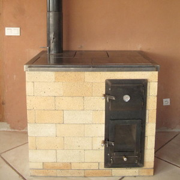
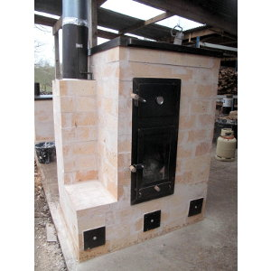

Les plans
Notre objectif est de développer puis de publier les plans d'une série de modèles standards couvrant les différentes puissances/fonctions permises par les poêles de masse.
|

Cuisinière de masse, V5 |

P14, V1 |
|---|
Cliquez sur une case pour voir la fiche du poêle correspondant.
Les poêles distribués sur cette page sont le fruit de plusieurs milliers d'heures de travail. Au total, nous avons construit une vingtaine de poêles de masse et les différentes conceptions imaginées, dessinées, rejetées sont plutôt de l'ordre 200..
Si vous vous lancez dans la construction d'un de ces poêles et qu'un défaut ou qu'une amélioration possible vous vient à l'esprit, contactez-nous AVANT de maçonner le poêle. Il est possible (mais pas certain !) que nous l'avons déjà testé.
Le plus dur, c'est de faire simple !
Avant de vous lancer nous vous recommandons de participer à un de nos stage, ou à défaut de vous tester sur la fabrication de notre modèle "bidon".
Commencez par le plus simple pour bien cerner les tenants et aboutissants. Planifiez bien votre construction et ne succombez pas à la tentation d'ajouter d'autres fonctionnalités ou de partir sur un poêle trop complexe dans l'idée d'avoir LE poêle parfait.
Les poêles de masse fonctionnent bien parce qu'ils séparent les fonctions : le foyer brûle le bois et la cloche récupère la chaleur des fumées. Les systèmes tout-en-un créent souvent plus de problèmes qu'ils n'en résolvent :
- Vous voulez un système pour chauffer de l'eau chaude avec du bois ? Faites un poêle dédié au chauffage de l'eau.
- Vous voulez chauffer de pièces éloignées et cloisonnées ? Faites un deuxième poêle de masse, passez sur un autre mode de chauffage, ou isolez votre maison par l'extérieur.
- Vous voulez récupérer la chaleur de votre poêle de masse pour faire un mur ou un plancher chauffant avec circulation d'eau chaude ? Faites un système dédié.
- Vous voulez faire de l'électricité avec la chaleur du bois ? Faites un système dédié.
La liste est encore longue et nous sommes nous mêmes passés par beaucoup de ces expériences. C'est pour cette raison que nous nous permettons de vous donner ces avertissements. Alors gardez le à l'esprit : le plus dur, c'est de faire simple !
Remarques générales
Licence :
Les plans que vous trouverez sur cette page et sur ce site sont distribués librement, sous une licence open-source CC BY-SA 4.0 : vous êtes libres de partager, d'utiliser, de transformer ce travail, même pour une utilisation commerciale tant que vous citez les auteurs originaux et que vous partagez les résultats de votre travail sous les mêmes conditions.
La construction d'un poêle de masse implique de nombreuses compétences et, bien que nous tentions de fournir les informations les plus claires possibles, nous ne pouvons garantir la réussite de votre construction. Nous ne donc saurions être tenus responsables de tout dommage, matériel ou immatériel causé à vous ou à vos équipements.
Construction :
Le débit des briques est donné en considérant que la plupart des chutes sont réutilisées. Il donc très important de :
- Découper les briques en partant des plus grandes. Une partie des chutes résultantes seront réutilisées.
- Découper sur le trait de coupe pour que l'épaisseur de la lame soit répercutée des deux cotés.
- Prévoir une marge d'au moins 10% de briques supplémentaires lors de la commande pour anticiper les erreurs de coupe.
Usage :
Voir la page dédiée au Manuel d'utilisation.
Cuisinière de masse, V5
La cuisinière de

Vue 3D du poêle avec banc de chauffe.
Les objectifs :
- Solide
Fiche technique :
- Chargement de bois : 8 kg
- Puissance : 3200W avec 3 flambées par jour
- Poids (sans le banc de chauffe) : environ __ kg
- Charge sous le poêle (sans compter le banc): __
- Dimensions : __ cm au sol et __ cm de haut
- Version : 5
- Date de publication : 10 Mars 2018
- Fichier Sketchup : __
- Débit : __
- Manuel en .pdf : __
Usage :
Ce poêle est destiné au chauffage de grands volumes ou de volumes mal isolés. Le four noir en haut à gauche du poêle atteint 500°C pendant la flambée et la température diminue par la suite jusqu'à la prochaine flambée. Le foyer est aux alentours de 350°C après la flambée, ce qui en fait aussi un excellent moyen de cuisson.
Remarques :
Ce poêle est actuellement en usage chez des membres de l'association Humus sapiens Pays d'Oc.
Images :


À gauche, poêle en cours de montage; à droite, banc de chauffe en briques de terre crue.